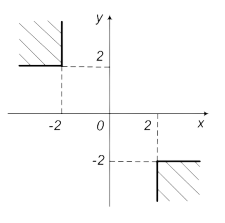

Варинт 5 Задание 1
Определить, принадлежит ли точка с координатами (х, у) заштрихованной части плоскости
Вариант 5 задание 2
Для xЭ[–1,7; 1,7] вычислить  Значение y произвольное. Шаг изменения x равен 0,2.
Значение y произвольное. Шаг изменения x равен 0,2.
Вариант 5 задание 3
Дано действительное число a. Вычислить f(a), если
Вариант 5 задание 4
Для xЭ[–3,7; 3,7] вычислить Шаг изменения x равен 0,2. Значения x и y вывести в виде таблицы. Найти количество значений y, больших и меньших нуля.
Вариант 4 задание 1 Array
В действительной квадратной матрице A порядка n найти сумму элементов строки, в которой расположен элемент с наименьшим значением.